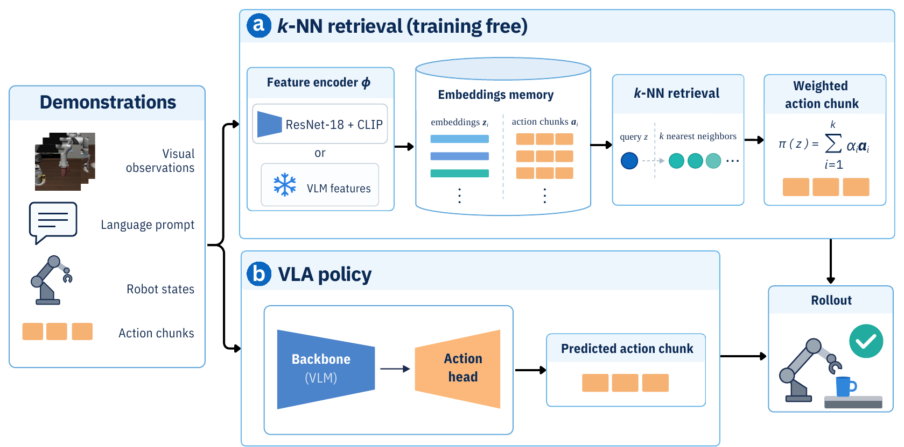

44/50pick up the black bowl between the plate and the ramekin and
place it on the plate47/50pick up the black bowl next to the ramekin and place it on the
plate50/50pick up the black bowl from table center and place it on the
plate48/50pick up the black bowl on the cookie box and place it on the
plate50/50pick up the black bowl in the top drawer of the wooden cabinet
and place it on the plate16/50pick up the black bowl on the ramekin and place it on the plate
49/50pick up the black bowl next to the cookie box and place it on
the plate49/50pick up the black bowl on the stove and place it on the plate
42/50pick up the black bowl next to the plate and place it on the
plate45/50pick up the black bowl on the wooden cabinet and place it on
the plate
50/50pick up the alphabet soup and place it in the basket
50/50pick up the cream cheese and place it in the basket
50/50pick up the salad dressing and place it in the basket
50/50pick up the bbq sauce and place it in the basket50/50pick up the ketchup and place it in the basket49/50pick up the tomato sauce and place it in the basket
50/50pick up the butter and place it in the basket50/50pick up the milk and place it in the basket50/50pick up the chocolate pudding and place it in the basket
50/50pick up the orange juice and place it in the basket
50/50open the middle drawer of the cabinet48/50put the bowl on the stove47/50put the wine bottle on top of the cabinet48/50open the top drawer and put the bowl inside50/50put the bowl on top of the cabinet50/50push the plate to the front of the stove49/50put the cream cheese in the bowl50/50turn on the stove49/50put the bowl on the plate47/50put the wine bottle on the rack
34/50put both the alphabet soup and the tomato sauce in the basket
41/50put both the cream cheese box and the butter in the basket
48/50turn on the stove and put the moka pot on it50/50put the black bowl in the bottom drawer of the cabinet and
close it44/50put the white mug on the left plate and put the yellow and
white mug on the right plate49/50pick up the book and place it in the back compartment of the
caddy28/50put the white mug on the plate and put the chocolate pudding to
the right of the plate39/50put both the alphabet soup and the cream cheese box in the
basket35/50put both moka pots on the stove39/50put the yellow and white mug in the microwave and close it
Training-free k-NN rollouts on all 40 LIBERO tasks (2× speed).
Abstract
Vision-language-action (VLA) models now exceed 95 % success on the LIBERO simulation benchmark, yet it
remains unclear how much of this performance requires generalization beyond the training demonstrations. In
this work, we show that retrieving nearby demonstrations and reusing their action chunks achieves a success
rate of 91.7 % on LIBERO without policy training. Under LIBERO-Plus perturbations, retrieval shows the
smallest drop of all evaluated policies. Across nine publicly available VLAs, fine-tuning mostly makes the
vision-language backbone a better retrieval key, and the actions of the VLAs remain close to the
demonstrations. In addition, we introduce Local Action Consistency (LAC), an offline metric that measures
whether nearby observations in representation space are also associated with similar future actions. We
show that LAC tracks the success rate of retrieval and can guide the training of a retrieval key.
Method

Overview of our evaluation pipeline. We use the same rollouts for all evaluations.
(a) k-NN: retrieves the nearest demonstration frames, and combine their corresponding action
chunks.
(b) VLA: predicts an action chunk directly through its backbone and action head.
Local Action Consistency (LAC)
Do similar representations correspond to similar future actions? We introduce an offline metric that tests
this without robot rollouts. For each query, it measures whether nearby demonstrations in representation space
have more similar future action chunks than other demonstrations of the same task.
LAC compares the average future-action distance from a query to its k nearest neighbors in
representation space with the average distance to demonstrations from the same task.
Results
1Retrieval reaches 91.7 % success on LIBERO
and remains robust to perturbations
Without a learned policy, the k-NN is on par with π0-FAST on LIBERO. On
LIBERO-Plus, the multimodal k-NN outperforms 7 of the 9 evaluated VLAs and
shows the smallest drop in success rate under perturbations.
k-NN (ResNet) 88.7 %
training-free
Frozen ResNet-18 features. Retrieval within the same task.
k-NN (Multimodal) 91.7 %
training-free
+ robot state, language, time, and history. Retrieval across all tasks.
k-NN (LAC key) 93.0 %
learned key
Multimodal retrieval with a LAC-trained projection of ResNet features.
LIBEROLIBERO-Plusk-NN (ours)VLA
Success rate (%)
20406080100
Success rate (%) on LIBERO (official protocol, 2000 episodes) and on the same 420
LIBERO-Plus variants.
2Retrieval separates the VLM backbone from the
action head
We replace the ResNet features with the features of a VLA's backbone, before and after LIBERO fine-tuning.
When this k-NN beats the full VLA, the action head leaves useful information in the backbone unused.
k-NN before fine-tuningk-NN after fine-tuningVLA
Success rate (%)vs VLA
0255075100
k-NN success using each VLA's VLM backbone before and after LIBERO fine-tuning, compared with the full VLA.
vs VLA: k-NN after fine-tuning minus the VLA, in %pt. GR00T freezes its VLM, so before = after.
3What LIBERO fine-tuning does to the VLM backbone
A better retrieval key, mostly under perturbation: retrieval improves for 7 of 8 VLAs
on LIBERO-Plus.
Organized by task progress: neighbors from other demonstrations sit at a closer point
of the task.
Less tied to the scene: the features depend less on which LIBERO suite a frame comes
from.
But not always: π0's backbone collapses into one cluster per task, and
retrieval drops from 86.9 % to 17.9 %.
t-SNE maps of retrieval keys for the same 4,150 demonstration frames from LIBERO. Top: before LIBERO
fine-tuning (ImageNet ResNet-18 for the first column). Bottom: after fine-tuning (LAC-trained key for the
first column). Colors indicate normalized episode progress. Below each map: median progress gap to the
nearest frame from another demonstration of the same task.
4The actions of the VLAs remain close to the
demonstrations
We record the action chunks each VLA outputs in its LIBERO rollouts and compare them with the
demonstrations,
using held-out demonstrations as the yardstick for what a new, valid demonstration looks like.
At the states a VLA visits, the k-NN, which only reuses demonstrated actions, predicts the actions of 5 of
the 8 VLAs better than it predicts held-out demonstrations. And for every VLA, the closest action chunk in
the
training data is nearer than it is for held-out demonstrations.
On LIBERO, the VLAs thus stay closer to their training data than a new demonstration of the same task does,
and much of their behavior can be explained by the nearest demonstrations.
5LAC tracks retrieval success
LAC tracks closed-loop retrieval success (Pearson r = 0.78), but does not reliably rank keys of
similar quality (Spearman ρ = 0.61).
Offline LAC versus closed-loop retrieval success. Each point is a visual representation used as the key of
the ResNet k-NN variant. The dashed line is fitted on all keys except the fine-tuned VLM backbones, which
were trained on the held-out demonstrations.
BibTeX
@inproceedings{grachev2026knn,
title={{How Much of Your VLA Is kNN}},
author={Denis Grachev and Damien LaRocque and Omar Moured},
booktitle={CoRL 2026 Workshop on The Action Gap: Large Generative Models Learn Rich Knowledge},
year={2026},
url={https://openreview.net/forum?id=OoI6kXUw6b}
}